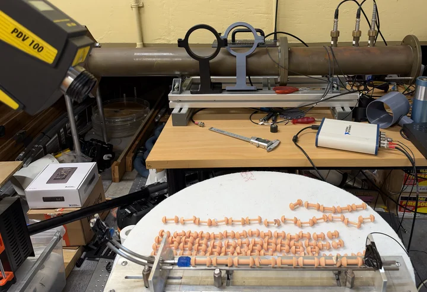
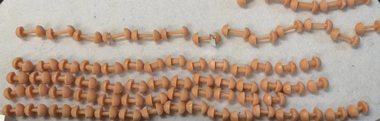
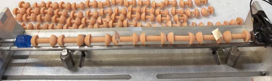
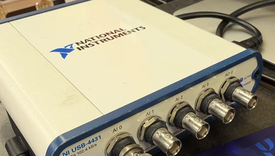

Mechanical engineering · Auckland, NZ
Yuanhang
Wang.
I study how nonlinear mechanical networks can use waves to process signals.
I’m a mechanical engineering PhD candidate at Auckland University of Technology. I build models, print specimens and write software to measure how they move.
Experimental mechanics
Inside the impact lab
I print the specimens at AUT. Most of my experiments take place at the University of Auckland’s Acoustics and Vibration Research Centre.

Impact bench · University of Auckland


＋Printed at AUT
I print bead–rod specimens at AUT and arrange them in a guide rail to study how geometry changes wave propagation.


＋Motion and force
At the University of Auckland, I use two Polytec PDV-100 laser Doppler vibrometers to measure motion at two points and a force sensor at the end of the rail.


＋Three inputs, one acquisition system
A National Instruments USB-4431 brings the two velocity channels and the force channel into my acquisition program.
My calibration interface
I wrote the acquisition software and an interactive interface to check each input, compare responses and repeat the checks after adjustments.
Trace a channel · schematic
A · Velocity at the first measurement point.B · Velocity at the second measurement point.Force at the end of the rail.
Selected publication · SPIE 2022
A gentler grip on apples
I used finite element analysis to compare flat fingers with a three-point grip and trace where stress builds up inside an apple.
Read the paper↗Background
I also teach Engineering Materials at AUT as a teaching assistant.
- 2025–Auckland University of Technology
PhD candidate · Mechanical Engineering
- 2022–2024University of Leeds
MSc · Advanced Mechanical Engineering, Merit
- 2018–2022Zhengzhou University of Aeronautics
BEng · Mechanical Design, Manufacturing and Automation
Let’s talk engineering.
I welcome conversations about research collaborations and roles in mechanical modelling, prototyping and experimental testing.